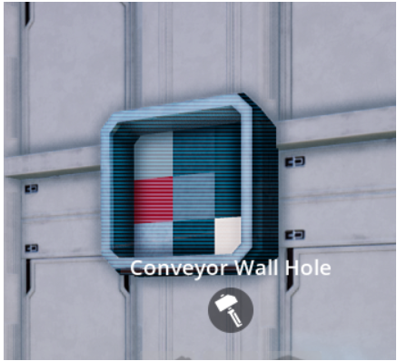

The conveyor its 1/9 foundation. Just cut this section, its not good? like this (6 sample, X is the cut):
xoo oxo oox ooo xox ooo
ooo ooo ooo oxo ooo xox
ooo ooo ooo ooo ooo ooo
Thank you!

The conveyor its 1/9 foundation. Just cut this section, its not good? like this (6 sample, X is the cut):
xoo oxo oox ooo xox ooo
ooo ooo ooo oxo ooo xox
ooo ooo ooo ooo ooo ooo
Thank you!
Hey, would it be possible get a version of the vertical multi balancer with 18 inputs and 6 outputs as well?
First, congrats for your mods, awesome !
small aesthetic issue about the small multi merger :
after installed/built, the output has IN orange signs and the input on the other side
has the green markings.
the 3D pre build hologram is fine
Thanks for the good work !
hey andre i only recently started modding and i wanted to try layouts and get used to the game so i installed the magic machine mod to get materials and other things. except there was one problem… i don’t know how to get a magic machine in game and how to use it
V3xor, Go on the Hub, and check the milestones on Tier 0, or 1… You have to scroll to the right… its kind of hidden…
ahhh ok thank you for that i will try it now
Spacedude!! I will do it for the next version! Thanks for the suggestion
Thanks ErnestVega!!! I will work in it for the next version… Im glad you like the mod!!! 
Hey, how do i use your mod?
in your “todo”, you said “Special GUI”, but what are the hotkey? how to use it?
Hi PJRM,
It still in " To Do " … i didnt do it yet… For now you only unlock in Hub (Tier 0 i think)… And build it for free…
Im thinking about what you said about the Power Shard in Tier 4… Maybe a real cheat like “Cheap Power Shards”) … some recipe like:
Assembler
10 Reinforced Iron Plate
15 Rotors
What you think ?
Mod> Floor Holes
Game Version> 121635
The Ceiling Splitter doesn’t sit flush against the ceiling like the Ceiling Merger does and it’s triggering me. lol. Also been having troubles getting Conveyor Lifts to connect to them.
As an example, I have two identical setups where I’m trying to connect a Conveyor Lift from a Smelter to a Ceiling Merger and one of them will connect and pass items through and the other will not. I have even tried rebuilding the setup from scratch.
Re: Floor Hole
Hi Andre, is it possible to add another conveyor hole in a “C” shape in addition to the current “Z” shape?
Please see badly shopped photo lol
EDIT: It would be even better if you could make the top or bottom independently rotatable but I realize that may be difficult.
Yes, thats what i wanna too! Thank you! Or movable hole, like wall hole.
Hi. The Vertical Balancers don’t appear to get input equally. It seems to prioritize the inputs from bottom to top, with the bottom given highest priority and the top the least.
To make sure I wasn’t just doing something wrong, I hooked up 6 Magic Machines to the inputs of the Vertical Balancer and the 6 center outputs to sinks. I’ve used Mk4 belts for all of them. With all 6 sinks running, everything appears to work fine. However, when I shut down every sink except one, the belt leading to that sink will eventually mostly contain what I feed in to the lowest input with an occasional item from the 2nd lowest input. None of the other inputs make it into the sink. When I turn on another sink, mostly items from the 2 bottom inputs make it to the sinks. This pattern continues until I turn on all 6 sinks again.
Is there a plan to update this so that when you place a larger wall you cant walk through parts of it?
How i can use this Mod??? I haven’t been able to find out yet!!!
Conveyor Wall Hole mod
Just an update. I disabled the “Automatic Clearance Separation” option in general settings and was able to get it working proper.
how do I use the magic machine mod its not showing up what teir do you unlock it
I have fount it

How can i build this? I cant find this, the others i have found…
That’s a hole where you can get the items out, right?
Yes WoBra, you can connect the conveyors in them.
That mod is this: https://ficsit.app/mod/DJ3adGrDjaJByG
You can unlock in the hub, in milestones.
{kind=link}